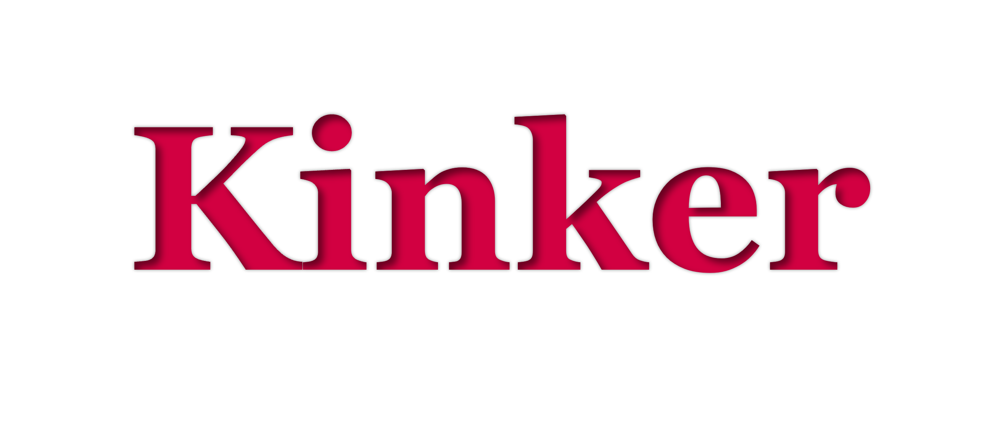

Kinker는 성향에 대한 관심이 있는 분들을 위한 전문 테스트로,
Dominant / Submissive / Switch와 같은 단순한 구분을 넘어
실제 관계 속에서 드러나는 성향을 보다 세밀하게 탐구하기 위해 설계되었습니다.
통제, 훈육, 고통, 수치, 굴복, 페티시
총 6가지 핵심 요소를 기준으로, 각 10문항씩 구성된 60문항을 통해
개인의 반응 패턴을 정량화합니다.
상위 3가지 요소의 조합을 바탕으로 구조화된 성향 유형을 도출합니다.
결과는 절대적인 규정이 아닌, 자신을 이해하기 위한 하나의 기준으로 활용해 주세요.